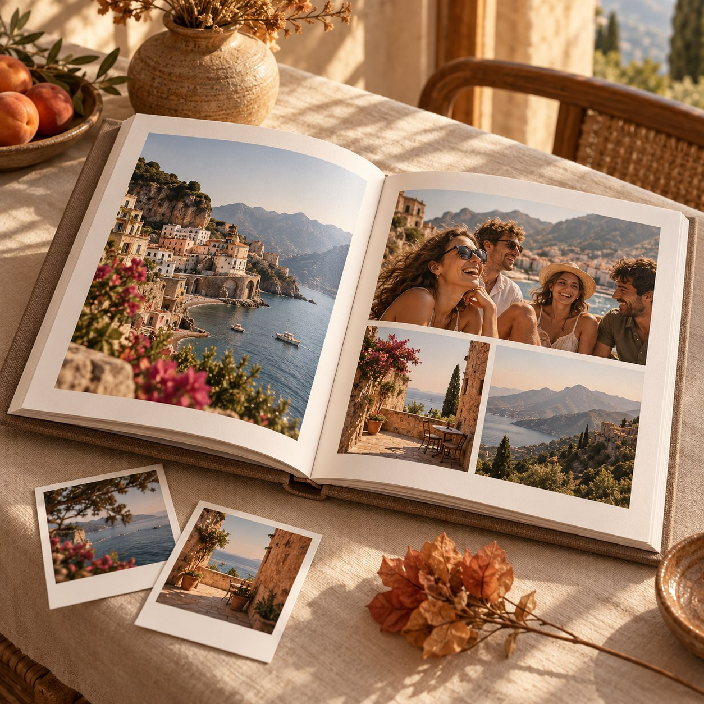
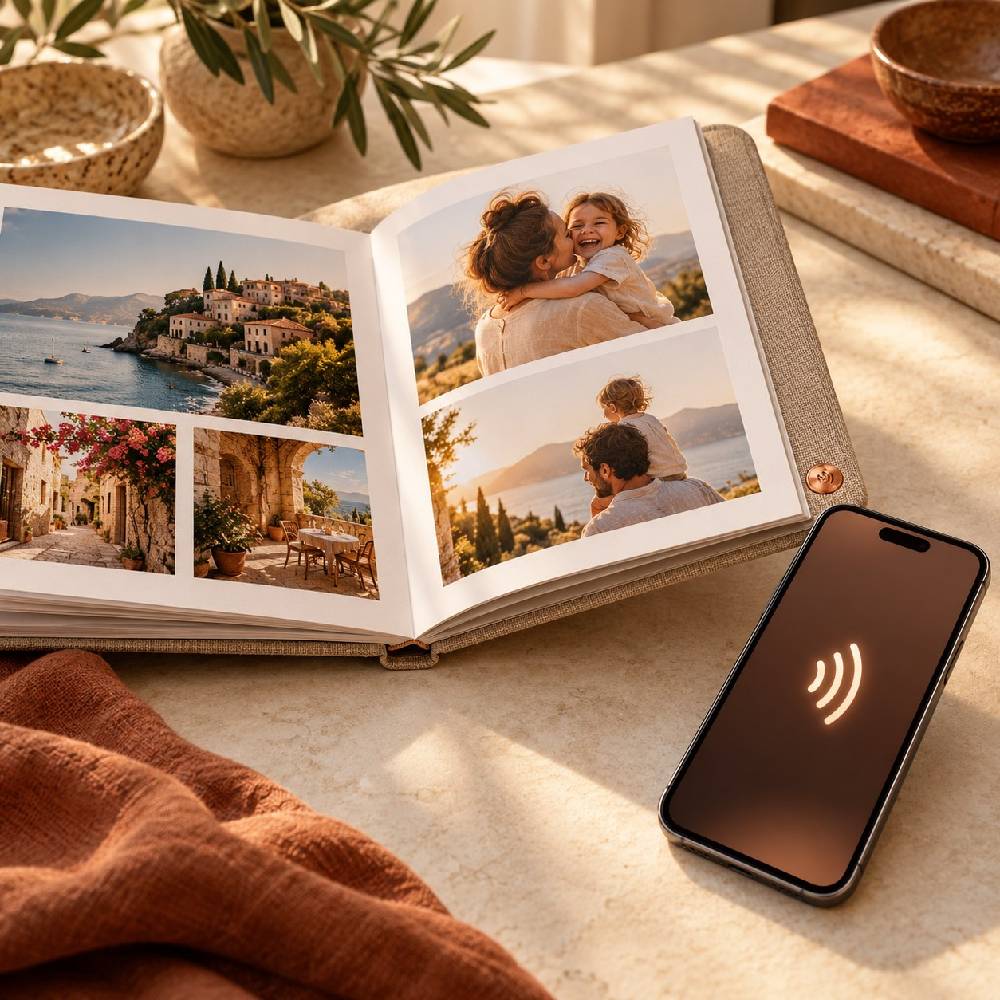
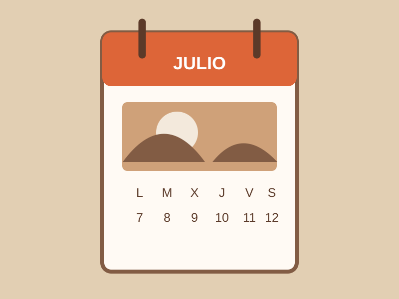
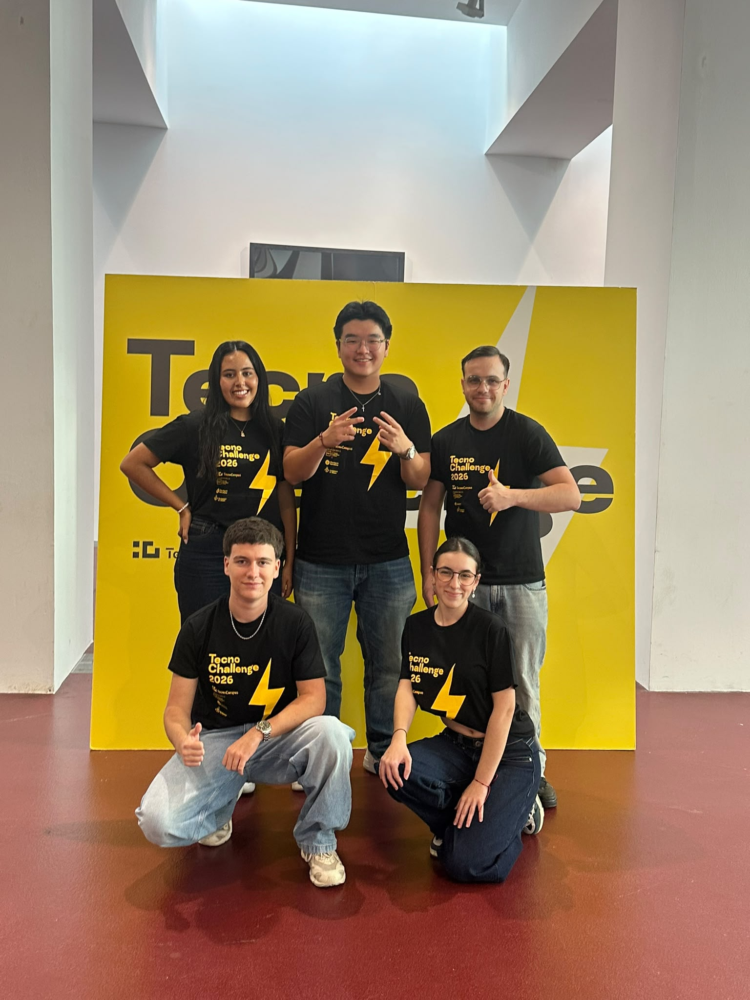
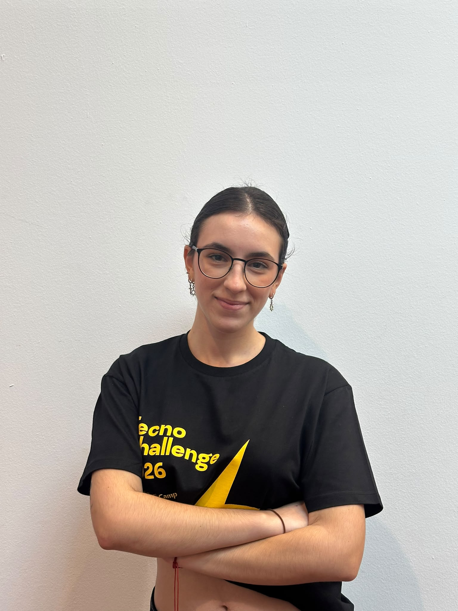
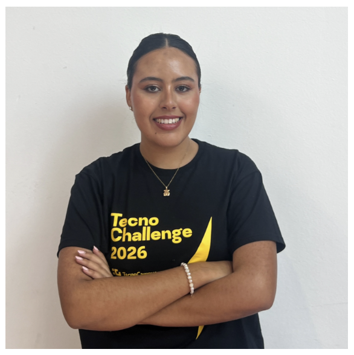
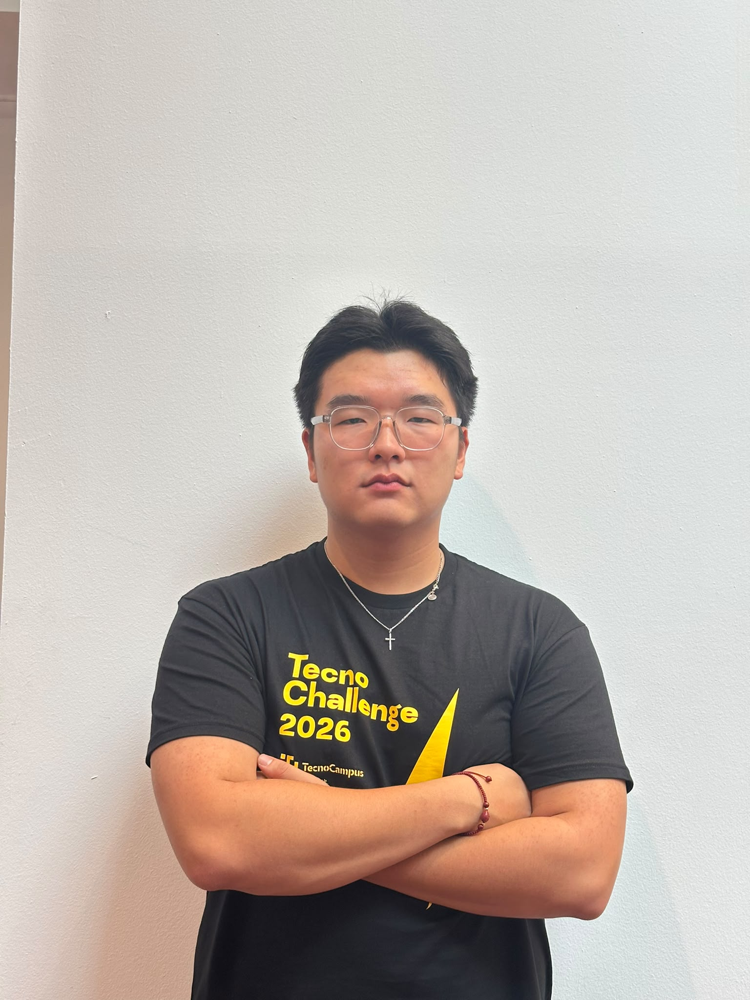
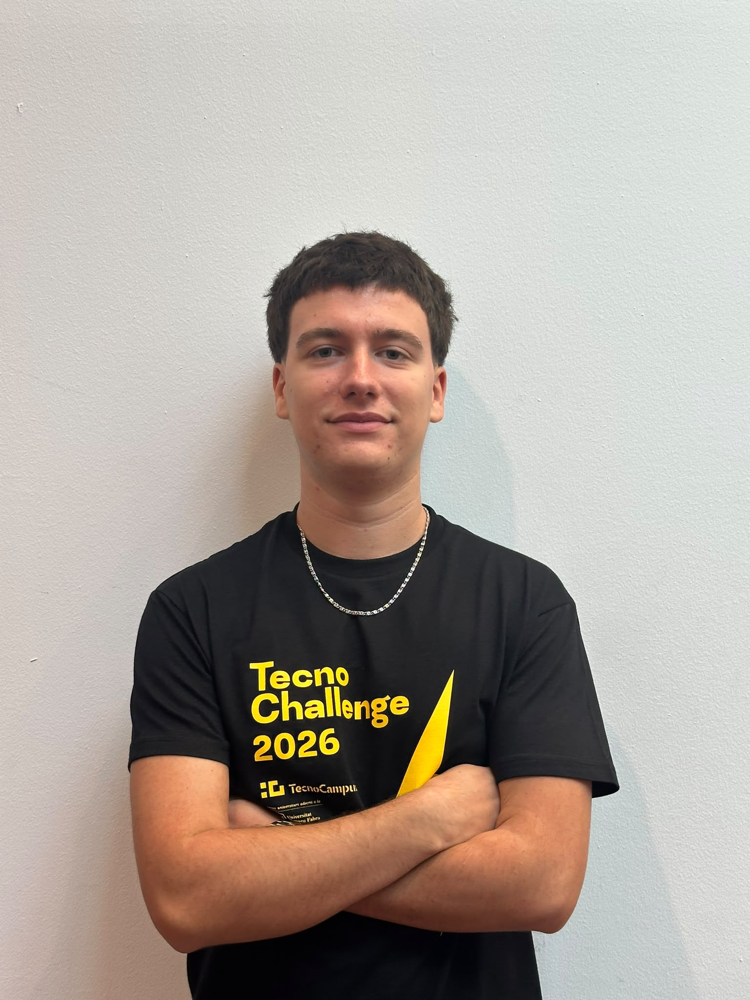
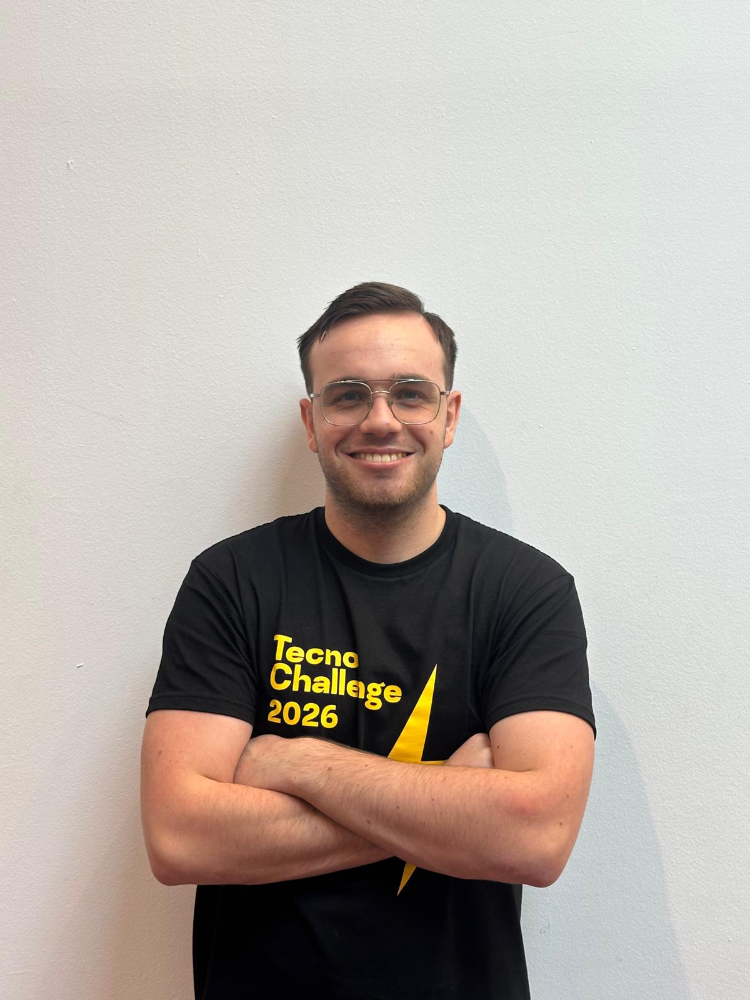

Recuerdos que se pierden en el carrete↗
86,7%de las personas encuestadas sienten que tienen recuerdos importantes perdidos entre miles de fotos.
Encuesta exploratoria del equipo · 83 respuestas
Una propuesta para Imaxel · TecnoChallenge
NextMoment convierte una galería saturada en una colección de recuerdos que puedes volver a encontrar, revisar y compartir en papel.
 Idea en evolución · Nombre de proyecto: NextMoment
Idea en evolución · Nombre de proyecto: NextMoment
Una historia que se quedaEl reto de Imaxel
Hacemos fotos en viajes, celebraciones y días normales. Con el tiempo, lo importante queda mezclado entre duplicados, capturas y momentos que no encontramos.
de las personas encuestadas sienten que tienen recuerdos importantes perdidos entre miles de fotos.
solo vuelve a mirar fotos de hace más de un año alguna vez al año.
Encuesta del equipo · n=83comparte las fotos de grupo por WhatsApp, donde pueden perderse entre mensajes.
Encuesta del equipo · n=83Son resultados de una encuesta propia y exploratoria; describen a quienes respondieron y no se presentan como una muestra representativa de toda la población.
Lo que nos dijo la investigación
La propuesta se afinó escuchando hábitos, motivaciones y dudas. El álbum físico destaca como una forma valiosa de volver a mirar y compartir las fotografías.
El espacio que queremos ocupar
La propuesta conecta una revisión consciente de la galería con una forma tangible de conservar lo elegido.
La propuesta
NextMoment hace de la revisión una experiencia sencilla y devuelve el control a la persona. La inteligencia artificial puede ordenar y proponer; cada recuerdo se conserva o se descarta con una decisión humana.
La app accede a la galería con los permisos del dispositivo y presenta las imágenes de forma ágil.
La galería, en contextoPuede señalar duplicados, fotos borrosas o capturas y agrupar recuerdos por viaje o época.
Asistencia, no decisiónEn el Modo Match, desliza para conservar o marcar una foto. Puedes deshacer y recuperar desde una papelera de 30 días. El borrado definitivo requeriría tu confirmación.
Tu criterio primeroNextMoment propone una maquetación. La revisas, haces los cambios que quieras y confirmas el pedido.
Solo se imprime lo elegido

×Revisar✓ConservarConfianza desde el diseño
El miedo a perder una imagen importante aparece entre las principales barreras detectadas. Por eso, la propuesta incorpora decisiones reversibles y deja la aprobación en manos de quien conoce la historia.
Privacidad como criterio
Los apuntes del proyecto proponen que la revisión y la selección ocurran en el dispositivo, y que solo se transfieran las imágenes elegidas cuando la persona solicite un álbum o una copia digital.
Es un principio de diseño por validar, no una arquitectura ya implementada. También queda pendiente decidir quién alojaría las copias digitales vinculadas a los códigos QR.
Recuerdos en papel
El producto central es un libro impreso con las fotos escogidas. La propuesta contempla maquetación automática, impresión bajo demanda en papel reciclado y un QR en cada página para abrir una copia digital ligera.
El sistema agrupa las imágenes, prepara una propuesta de álbum y deja que la revises antes de confirmar. El coste final dependería del número de fotos y de la producción.
Selecciones pequeñas para regalar o tener a mano.

Ideas de tienda planteadas para ampliar la experiencia.
El prototipo incluye una demostración visual de esta idea, sin lectura NFC real. El flujo base documentado plantea QR por página.
Modelo de negocio
La definición más reciente del proyecto prioriza el pago único por álbum frente a una suscripción mensual: el 59% de la encuesta preferiría pagar cuando quiera pedir el libro.
La limpieza y la organización se plantean como acceso gratuito con anuncios. En el flujo descrito, aparece un anuncio cada 25 fotos revisadas.
Freemium con publicidadLa persona paga al pedirlo; el importe se calcularía según el número de fotos. No hay tarifa final validada.
Sin cuota mensual en la propuesta afinadaImaxel podría licenciar el módulo a tiendas, laboratorios o comercios de fotografía, que ofrecerían el servicio a sus clientes con su propia marca.
Enfoque B2B2C · ingresos por licencia o pedidoEl esquema documentado busca que amigos y familia recomienden la experiencia.
La encuesta encontró que el 59% preferiría pagar solo por el álbum. La impresión, el envío, el servidor QR y el interés de los comercios todavía requieren validación y costes reales.
Abre la aplicación desde tu móvil para conocer la versión publicada.
Probar NextMomentUna demostración del flujo y las pantallas de la aplicación.
Para quién lo imaginamos
La investigación dio prioridad a estudiantes que viajan y a familias con hijos. Los perfiles resumen necesidades observadas; son arquetipos, no testimonios de personas concretas.
Hace fotos en viajes con amigos, las comparte por chats y quiere conservar un álbum del viaje sin tener que maquetarlo desde cero.
Le ayuda: selección grupal y pago por álbumGuarda muchas fotos familiares y valora poder preparar un recuerdo para compartir con sus hijos y familiares.
Le ayuda: organización automática revisableValora el formato físico y puede ser quien recibe un álbum hecho con fotos compartidas por su familia.
Le ayuda: un recuerdo sencillo de abrir y compartirLo que podría venir después
En la lluvia de ideas aparecieron otros formatos para hacer visibles y compartibles las fotografías.
El equipo
NextMoment nace en TecnoChallenge para responder al reto de Imaxel. Reunimos experiencia audiovisual, diseño de producto, estrategia y comunicación para dar forma a la propuesta.


01Estudiante de segundo curso de Medios Audiovisuales. Se encarga de editar el vídeo promocional y desarrollar contenidos audiovisuales que comuniquen la propuesta de NextMoment.

02Estudia segundo curso del doble grado en ADE y Turismo en TecnoCampus (UPF). Su perfil internacional y multilingüe combina creatividad, organización e interés por el emprendimiento, la innovación y la sostenibilidad.

03Interesado en tecnología, innovación y proyectos digitales. Trabaja en el diseño conceptual de la aplicación, la definición de sus funcionalidades y una experiencia de uso más clara.

04Estudiante de segundo curso de Marketing. Diseñó y analizó la encuesta del proyecto para definir el público prioritario y plantear la propuesta de precios, puntos y referidos.

05Responsable de la planificación estratégica y la gestión del proyecto. Aporta creatividad, iniciativa y capacidad de trabajo en equipo para convertir ideas en propuestas viables.
Siguientes preguntas
El material define una dirección, pero también identifica cuestiones que deben resolverse con Imaxel, tiendas y usuarios:
NextMoment · Imaxel · TecnoChallenge
Descubre la propuesta a través del prototipo interactivo y recorre sus pantallas de ejemplo.
Entrar en el prototipo